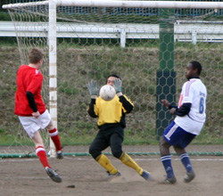
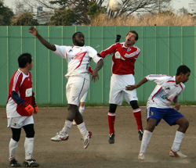

|
Todoroki, Saturday 28th March
Two late goals, one for each side, rounded off an entertaining game in the trite conditions of Todoroki. A scrambled goal five minutes from time, looked to have given the Lions the points, but a trademark Takanori screamer gave BEFC a deserved share of the spoils.
Earlier in the week, it had looked like the Embassy were struggling to put together a team, let alone one to defeat a competitive Lions side that has enjoyed an impressive debut season in Division One. But a late rally of interest saw the Embassy assemble a team with a solid look throughout, and so it would prove as they settled well, despite safe-hands Eddie leaving clean-sheets Richie between the sticks for the first ten minutes. During that time, he had little to do, as for all their flicks and tricks, the Lions couldn’t create a clear opening. The Embassy were knocking the ball around as best as the mud allowed, and causing danger especially down the left with Simon and Masa linking well.
 In the first half, the Embassy had looked the more likely to score. A swerving, bending dipper from Takanori hit the outside of the post, and Alex and Hal, who have built up a nice-looking partnership up-front, with Hal’s intelligent running complimenting Alex’s hold-up play, were denied by either last-ditch tackles or the woodwork. The nearest the Lions came was hitting the outside of the post from a tight angle, and Rob clearing one off the line following a scrambled corner.
Little by little the Lions began to turn the screw a bit in the second half as tired legs played their part. They forced Eddie into a few stretched tip-overs and saw many scrambles in the boxes cleared by desperate defending, Mark and Lou making several key interceptions and clearances. That said, the Embassy probably had the better chances. Tetsu, who’d been a threat all afternoon in an unfamiliar role on the right, arrived on the end of some great crosses but couldn’t find the power to beat the keeper. It seemed destined to end goalless.
But there was a sting in the tail –there usually is with the Embassy. A corner was half-cleared (that’s better than usual) but a cruel ricochet saw the ball at the paws of a Lion in the box and he calmly slotted home. In this situation, the Embassy have a habit of letting heads drop and likely conceding again. But there’s a resilience growing (3 draws in 5, after ten losses from ten shows a marked improvement) and the way they battled back was impressive. Straight from the kick-off they knocked the ball around with purpose, and with just a minute remaining, Takanori struck the ball sweetly into the corner.
So 1-1 it finished, a fair result perhaps in a game played in good spirits. The Lions have pretty much secured top flight status for next year – the Embassy need a miracle…Fulham anyone?
Report by Robert Horsfield
|